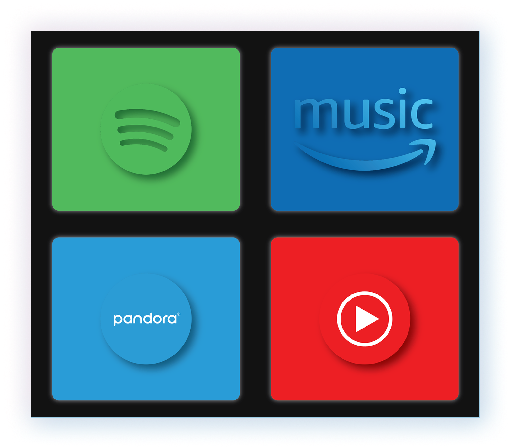

Bias in Music Recommendation Systems
A short one-line summary of the study.
I'm a UX Designer & Researcher creating experiences in digital spaces for everyone.
Let's work togetherA short one-line summary of the study.

A short one-line summary of the study.

Examining representation & algorithmic bias across platforms.

Usability testing and recommendations for LMS flows.

Designing privacy-aware dashboards and user flows.

Critical reflection on AI in consumer products.